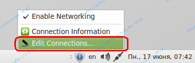
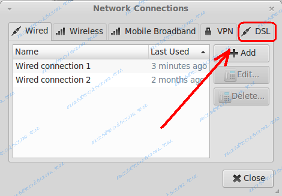
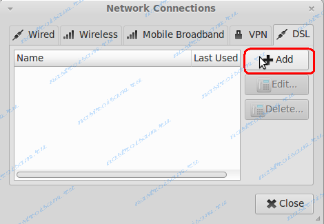
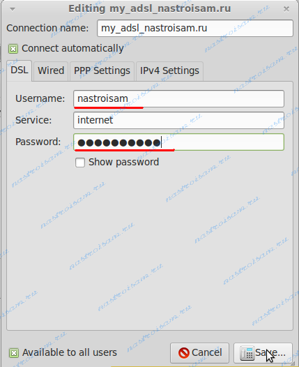
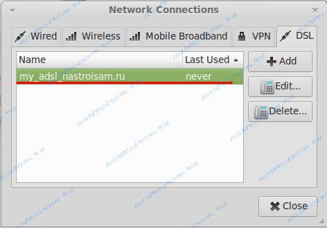

Ранее я уже делал инструкцию как настроить подключение по PPPoE в Linux через универсальную утилиту pppoeconf. Она является универсальной для разных дистрибутивов Linux. В этой статье я рассмотрю частный случай — настройка PPPoE на Linux семейства Debian: Ubuntu, Linux Mint, Xandros и т.д., использующие графическую оболочку Gnome и имеющие в дистрибутиве интегрированную программу для управления сетевыми соединениями — Network Manager. Графический интерфейс программы очень простой и позволяет любому пользователю настроить PPPoE-соединение за несколько кликов мышью.
Итак, в правом нижнем углу, в системном лотке около часов ищем значок сетевого подключения и кликаем на нем правой кнопкой мыши — откроется вот такое меню:

Выбираем пункт Edit connections. Откроется окно Network Connections:

Открываем вкладку DSL:

Для того, чтобы создать высокоскоростное соединение — нажимаем кнопку Add:

В поле Connection name указываем любое название сетевого соединения. Ниже, в поля Username и Password прописываем логин и пароль на подключение, выданные Вам при подключении к сети провайдера. Поле Service можно оставить пустым, я, например, обозвал — internet. Если Вы хотите, чтобы соединение с Интернет запускалось автоматически — поставьте галочку Connect automatically. В принципе, в 99% случаев никаких иных действий делать не надо. Нажимаем кнопку Save.
В списке сетевых соединений видимо созданное подключение:

Нажимаем кнопку Close чтобы закрыть окно. Теперь опять кликаем на значке сетевого подключения левой кнопкой мыши: ubuntu-network-manager-pppoe-006 В списке ищем созданное подключение и кликаем на нем для подключения к сети Интернет.